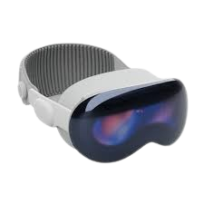

APPLE VISION PRO
Precio:
$3,499.00
Almacenamiento:
Especificaciones:
- Pantalla: Pantalla micro-OLED dual con más de 23 millones de píxeles.
- Procesador: Apple M2 y R1 para manejo de realidad aumentada y virtual.
- Sensores:
- Cámaras y sensores LIDAR para detección espacial y seguimiento ocular.
- Sistema Operativo: visionOS optimizado para realidad extendida.
- Materiales: Estructura de vidrio curvo y banda ajustable en tela tejida.
- Batería: Hasta 2 horas de uso continuo con batería externa, conexión directa ilimitada.